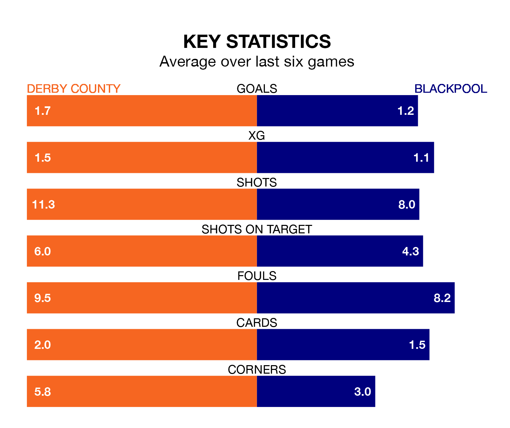

Derby County host Blackpool in Friday's match at Pride Park Stadium looking to bounce back from defeat last time out in EFL League One.
The Rams, who sit second in the league after 40 games, fell to a 1-0 away defeat to Northampton Town on March 23.
They face a Blackpool side who also lost their last match, a 1-0 defeat to Wigan Athletic, and who sit ninth in the table.
With 69 goals in 40 games so far this season, Derby are scoring more than average in the league with 1.7 goals per game. And they are conceding fewer than average, letting in 35 goals at a rate of 0.9 per game.
Blackpool are also above average scorers, with 1.5 goals per game, compared to a league average of 1.3. They have conceded 1.1 goals per game.
In the last 10 years, Derby and Blackpool have played each other on seven occasions. Derby won six of them and Blackpool one.
On average, the Rams scored 2.0 goals and the Seasiders 0.6 in those matches.
Their last meeting was on October 3, when Derby won 3-1 away.
With Joe Wildsmith between the sticks, County can rely on one of the league's safest pair of hands. He has kept 15 clean sheets in his 34 appearances this season, and only two other 'keepers – Portsmouth's Will Norris and Lincoln City's Lukas Jensen – have been able to prevent the opposition scoring on more occasions in EFL League One.
In the Seasiders' net, Daniel Grimshaw has 14 clean sheets in 38 games. He has conceded a goal every 88 minutes, 40% more often than the 121 minutes between goals for Wildsmith.
The Rams are in reasonable form in EFL League One, with four wins and two losses from their last six games.
With three wins and a draw over that period, the away side's form is slightly worse – they have taken 10 points from 18, compared to the hosts' 12.
Updated: 12:16 (UTC), 25/03/24